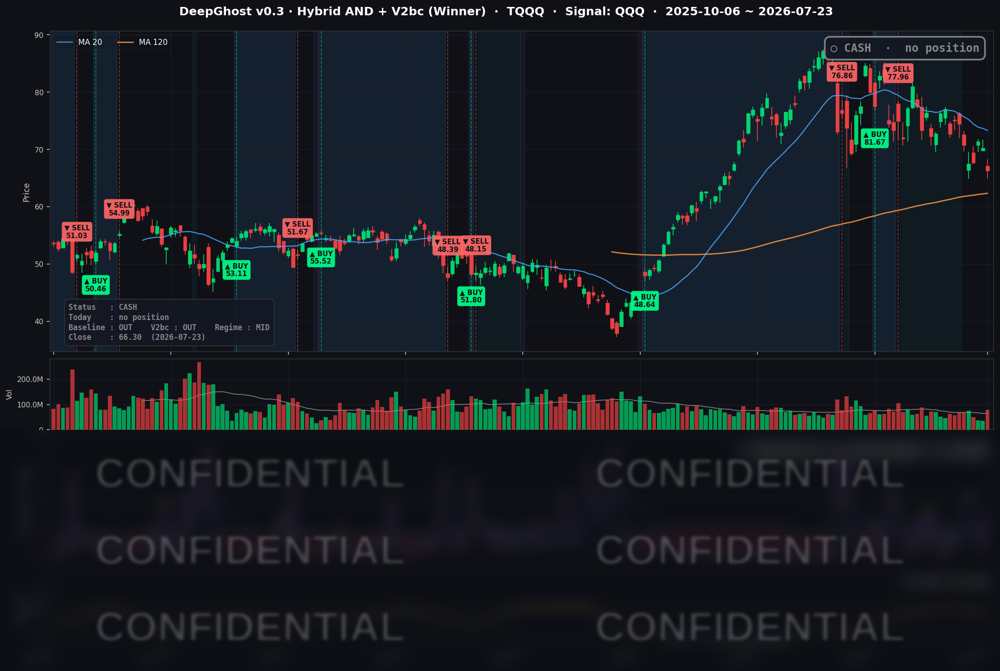

👻 매일 시그널과 히스토리를 홈페이지에서 한눈에 → www.ghostai.co.kr
테슬라·알파벳 어닝 실망에 홍해發 유가 급등($100 돌파)이 겹치며 빅테크가 몰락했습니다. 우리 전략은 현금을 유지해 이번 하락장을 피할 수 있었습니다.
📊 오늘의 매매 신호
| 항목 | 내용 |
|---|---|
| 오늘 할 일 | ✅ 아무것도 안 해도 됩니다 |
| 포지션 상태 | 💵 현금 보유 중 (OUT OF POSITION) |
| 현금 보유 기간 | 2026-06-25 ~ 2026-07-23 (28일) |
| TQQQ 종가 | $66.30 (−5.66%) |
신규 매수·매도 신호 없이 현금 대기가 이어졌습니다. 오늘도 관망 상태를 유지합니다.
TQQQ 시그널 — OUT OF POSITION
현재 상태: 현금 보유 중 | 신규 진입·청산 신호 없음

오늘 미국 시장 — 시황 요약
지수 마감
| 지수 | 종가 | 등락률 |
|---|---|---|
| S&P 500 | 7,408.30 | −1.21% |
| 나스닥 종합 | 25,137.69 | −2.15% |
| 다우존스 | 51,711.65 | −0.97% |
| 러셀 2000 | 2,940.16 | −0.67% |
나스닥이 다우·러셀을 크게 밑돈 전형적인 "메가캡 테크발 하락"이었습니다. 소형주 지수인 러셀 2000이 상대적으로 선방한 것을 보면, 지수 전반이 무너진 게 아니라 하락이 빅테크와 AI 투자 테마에 집중됐음을 알 수 있습니다. 3배 레버리지 상품 TQQQ는 QQQ(−1.90%)의 약 3배인 −5.66%를 반영했습니다.
국채 금리 동향
| 만기 | 수익률 | 전일 대비 |
|---|---|---|
| 3개월 | 3.800% | +5.5bp |
| 5년 | 4.461% | +5.4bp |
| 10년 | 4.703% | +4.6bp |
| 30년 | 5.171% | +2.4bp |
단기·중기 금리가 장기보다 크게 오른 하루였습니다. 유가 급등으로 물가 우려가 다시 불붙자 단기 금리 인상 기대가 자극된 형태입니다. 10년물이 연중 최고 수준인 4.70%까지 오르며, 밸류에이션이 높은 성장주에 할인율 부담을 더했습니다. 장단기 스프레드(10년−3개월 +90.3bp)는 여전히 정상적인 우상향 곡선으로, 경기 침체를 예고하는 금리 역전은 없습니다.
연준 발언 & 금리 패스
당일 시장을 움직인 개별 연준 위원 발언은 없었지만(뉴스가 어닝·유가에 집중), 최근 리사 쿡 이사(7/15)가 "현시점에서는 높은 인플레이션 리스크가 더 우려된다"며 물가 경계를 강조한 매파적 발언이 재조명됐습니다. 유가 급등까지 겹치며, 시장은 "연준 인하 기대"에서 한 발 물러섰습니다. 다음 주 FOMC(7/29)의 톤이 최대 변수입니다.
오늘의 핵심 이슈
- 빅테크 어닝 실망 — 테슬라·알파벳 동반 급락: 테슬라(−14.52%)는 매출은 선방했지만 수익성 미스와 투자 부담에 급락했고, 알파벳(−7.13%)은 사상 최대 실적에도 2026년 설비투자 가이던스를 약 $200B로 대폭 올리면서 "AI 투자 vs 마진" 논쟁을 촉발했습니다.
- 유가 급등 → 인플레·금리 재점화: WTI가 +6.17%($92.19), 브렌트유가 +7.04%($100.69)로 $100을 돌파했습니다. 홍해 항로에서의 유조선 공격 리스크가 공급 차질 우려로 이어졌고, 이것이 국채 금리를 연중 최고로 밀어올린 방아쇠가 됐습니다.
- AI 투자 회의론 확산 = 광범위한 리스크오프: 알파벳발 충격이 아마존(−4.57%)·메타(−3.36%)·마이크로소프트(−2.24%) 등 대형 기술주 전반으로 번졌습니다. 메가캡 기준으로는 지난해 4월 관세 쇼크 이후 가장 나쁜 하루였다는 평가입니다.
변동성 & 투자심리
- VIX: 18.70 (전일 16.64 → +12.38%). 아직 20을 밑돌아 패닉 국면은 아니지만, 하루 +12% 급등은 경계심이 커졌음을 보여줍니다.
- 공포탐욕지수(CNN Fear & Greed): "공포(Fear)" 구간(약 42.83). 전날보다 심리가 공포 쪽으로 더 기울었습니다.
전반적으로 비관 우위이지만, (1) 하락이 빅테크·AI 테마에 집중됐고 소형주·에너지·금융은 방어했다는 점, (2) VIX가 아직 20 미만이라는 점, (3) 금리 곡선 역전이 없다는 점에서, 시스템 붕괴라기보다 밸류에이션·물가 재조정 성격에 가깝습니다.
매크로 & 원자재
- WTI: $92.19 (+6.17%) · 브렌트유: $100.69 (+7.04%, $100 돌파)
- 금: $4,046.60 (−2.42%)
물가 헤지 자산인 금이 오르는 대신, 이번엔 유가만 튀고 금은 오히려 밀렸습니다. 실질금리 상승이 금값을 눌렀음을 시사합니다. 중동 홍해 항로 리스크가 유가·물가·금리 상방을 자극한 매크로 축이었습니다.
주요 종목 동향
| 종목 | 전일 종가 | 당일 종가 | 등락률 | 비고 |
|---|---|---|---|---|
| AAPL | 325.89 | 321.66 | −1.30% | 어닝(7/30 예정) 앞둔 경계성 하락. 지수 대비 방어 |
| NVDA | 212.06 | 208.76 | −1.56% | 성장주 리스크오프에 동반 약세, 개별 악재는 아님 |
| MSFT | 390.34 | 381.58 | −2.24% | AI 투자 테마 전이 하락. 어닝 7/29(FOMC 당일) 예정 |
| GOOGL | 342.09 | 317.69 | −7.13% | 사상 최대 실적에도 2026 설비투자 ~$200B 상향으로 급락 |
| META | 627.17 | 606.10 | −3.36% | 알파벳 충격 전이. 어닝 7/29 예정 |
| AMZN | 244.85 | 233.66 | −4.57% | AI 투자·현금흐름 우려 사전 반영. 어닝 7/30 예정 |
| TSLA | 374.01 | 319.69 | −14.52% | Q2 이익 미스·투자 부담. 11개월 저점권 |
| NFLX | 68.53 | 68.89 | +0.53% | 커버리지 내 소수 상승 |
| AVGO | 396.81 | 392.47 | −1.09% | 반도체 약세에 소폭 동참, 상대적 방어 |
| QCOM | 175.63 | 171.11 | −2.57% | 반도체 리스크오프 하락 |
| INTC | 102.62 | 100.23 | −2.33% | 반도체 동반 약세, $100 지지선 근접 |
| MU | 959.48 | 990.21 | +3.20% | 커버리지 최강. 메모리 사이클 강세로 나 홀로 랠리 |
에너지·금융이 유가·금리 상승 수혜로 버틴 반면, 빅테크와 소프트웨어는 광범위하게 밀렸습니다. 반도체도 대부분 약세였지만, 메모리 사이클이 강한 마이크론(MU)만 예외적으로 급등했습니다. 다음 주는 마이크로소프트·메타(7/29)와 애플·아마존(7/30) 어닝에 FOMC(7/29)까지 겹치는 "이벤트 밀집 구간"으로, 현금 비중이 높은 지금이 오히려 다음 국면을 기다리기 좋은 자리라는 톤입니다.
Ghost.AI — Quantitative AI Investment
Model: DeepGhost v0.3 | Transformer-Based Deep Learning
Coverage: 13 tickers | Updated every trading day after US market close
⚠️ 본 자료는 정보 제공 목적으로만 작성되었으며 투자 권유가 아닙니다. 모든 투자의 책임은 투자자 본인에게 있습니다. 과거 성과가 미래 수익을 보장하지 않습니다.
[유의사항]
- 본 서비스는 불특정 다수를 대상으로 발행되는 단방향 정보 제공 서비스이며, 투자자 개인의 재산 상황·투자 목적·위험 선호도를 반영한 개별 투자 조언이 아닙니다.
- 고스트에이아이 주식회사는 고객과 쌍방향 의사소통(개별 상담, 맞춤형 자문 등)을 제공하지 않습니다.
- 본 콘텐츠는 투자 권유 또는 매매 주문의 청약·청약의 권유에 해당하지 않으며, 최종 투자 판단 및 그에 따른 손익의 책임은 전적으로 투자자 본인에게 있습니다.
고스트에이아이 주식회사